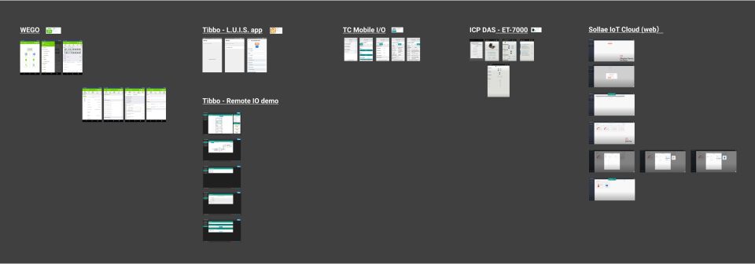

Remote IO App

Remote IO has been employed in a variety of applications, including water tank depth, alarm switch, energy management system, and so on. It accepts a variety of inputs and outputs. Using the Oring Remote IO App, you can effortlessly manage, diagnose, operate, and monitor your device from your smartphone.
Team
1 PM, 2 App Developers, 1 Firmware Developer
Role
UI/UX Designer
Time
2022
Process

Understanding previous projects and clarifying the significance of each address from the firmware engineer I performed a competitive study of the product structure to better understand the competitor's structure during the Bluetooth connection.
Some competitors provide both Web and App in comparable goods, but this research focuses solely on App. I discovered three patterns in the competition: the first is to divide all functions; the second is to combine all functions, with output and input separated on the UI; and the third is to combine them altogether.
With the possibility of increased input and output in the future, we determined to separate input and output to save user waiting time.
Integrate firmware and software engineers' practical experience, as well as common design patterns. I manage the Remote IO app's information architecture. Also, utilize wireflow to check the app's flow.
Information Architecture

Wireflow

It is a significant task for me to construct a Remote IO app while also built design system for app. I gathered all previous app design patterns and ui components. After organizing a base version, I designed iteratively. It helps me in building user interfaces quickly.
The most important thing to remember is that the app and the goods are linked via Bluetooth. Because it reads addresses one by one, we must account for the time the user waits.

Understanding the Modbus table proved to be a significant issue for me in this project. I collaborate with firmware and software developers to identify the significance of each register address and use personal experience as an analogy. Another area that requires study is the limitations and uses of Bluetooth communication. This knowledge helps me with my designs and proposals.
It was the first time I had created a product that required entering Engineering mode, and I was quite excited. In addition to the obvious users, the product must contain hidden features for technical personnel, and the orientation must be considerably different. This project provided me with expertise in engineering pattern creation, which will benefit me in the future when building testing and debugging features.